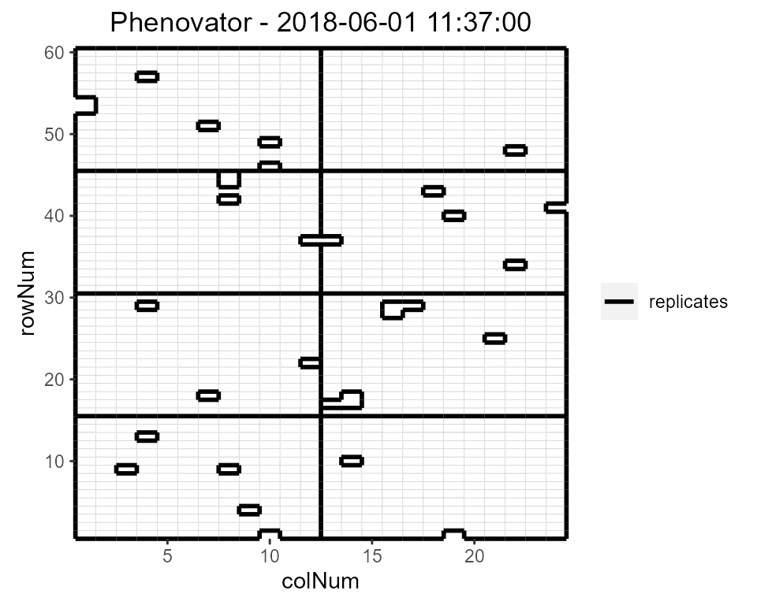
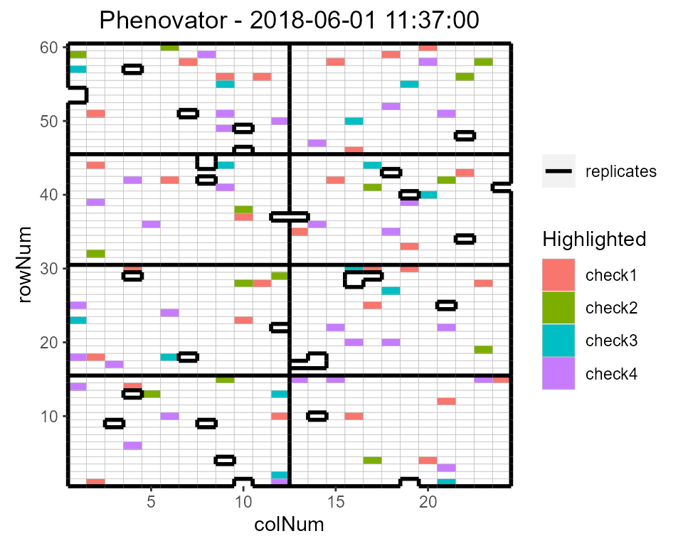
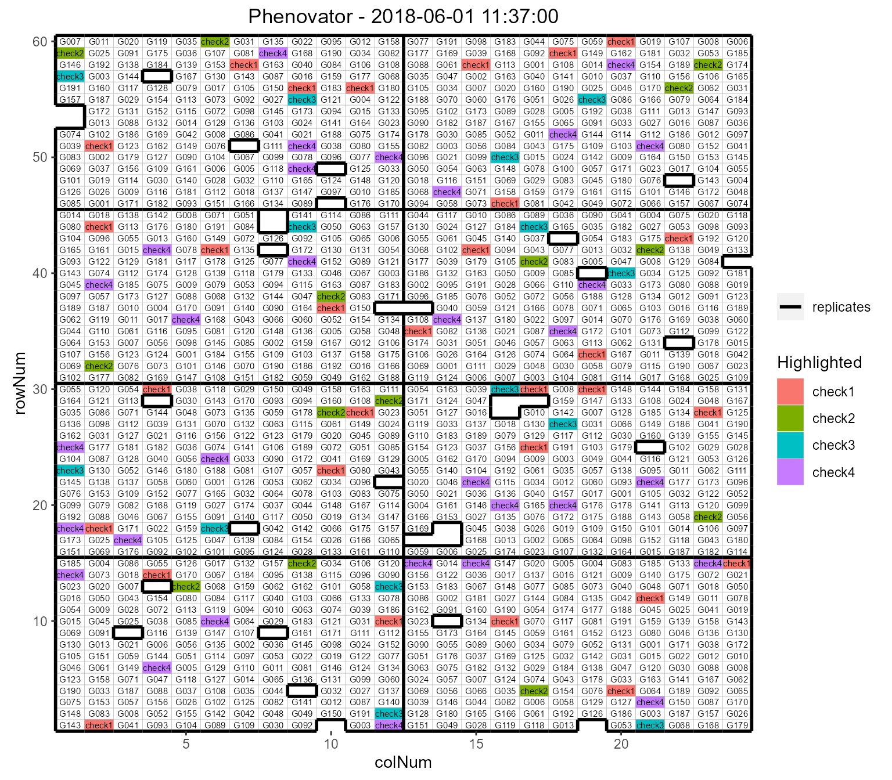
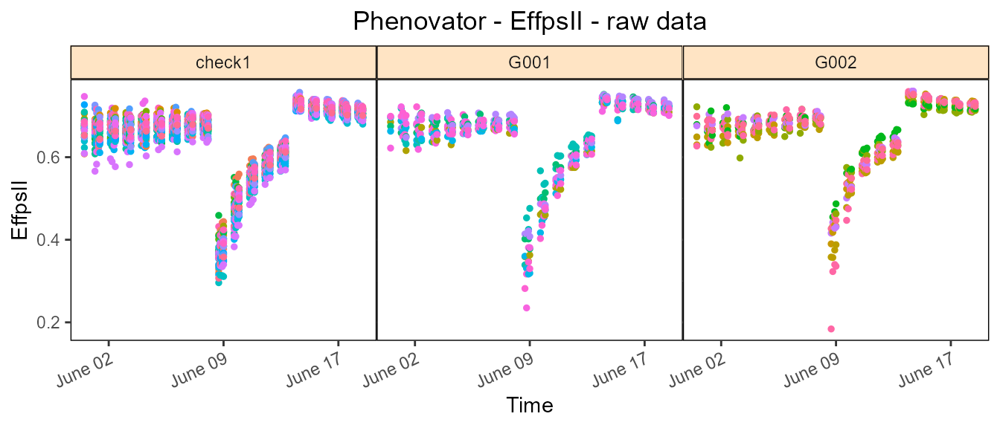
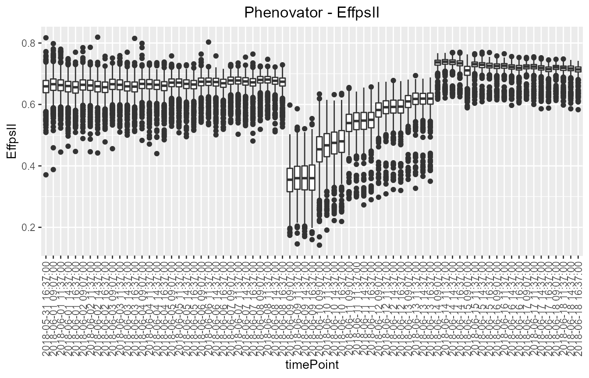
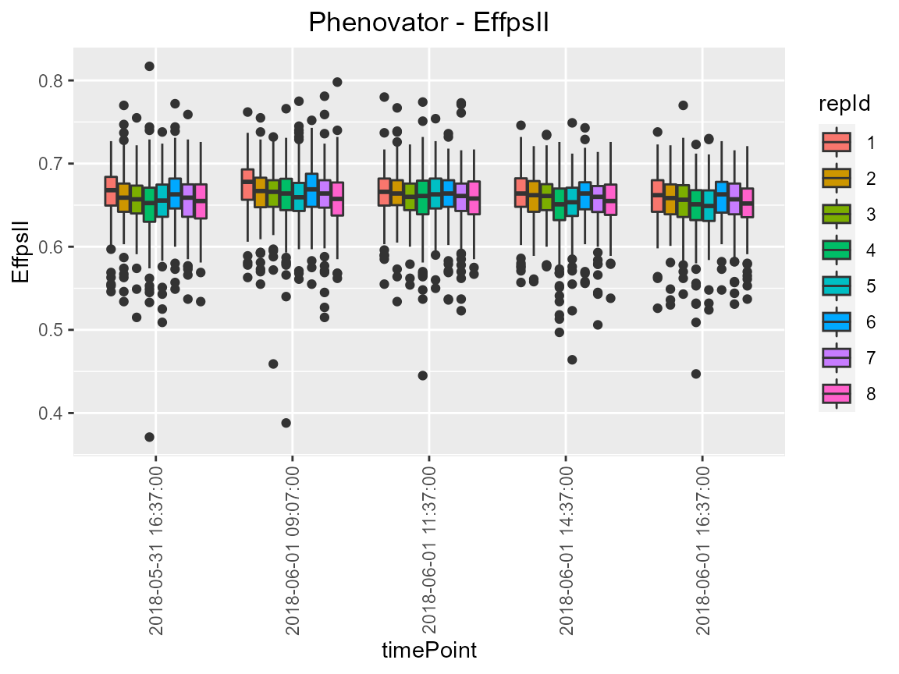
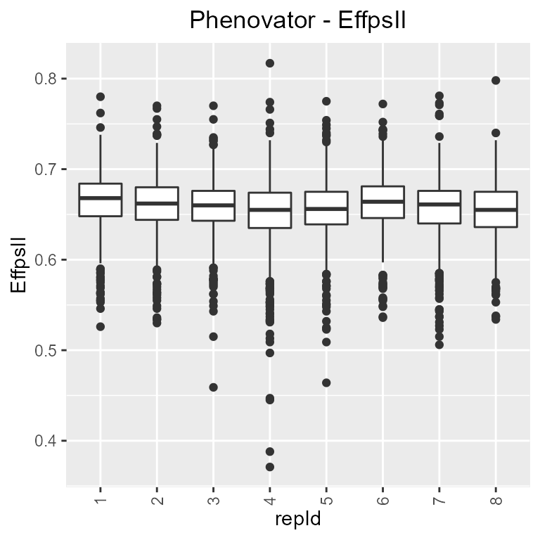
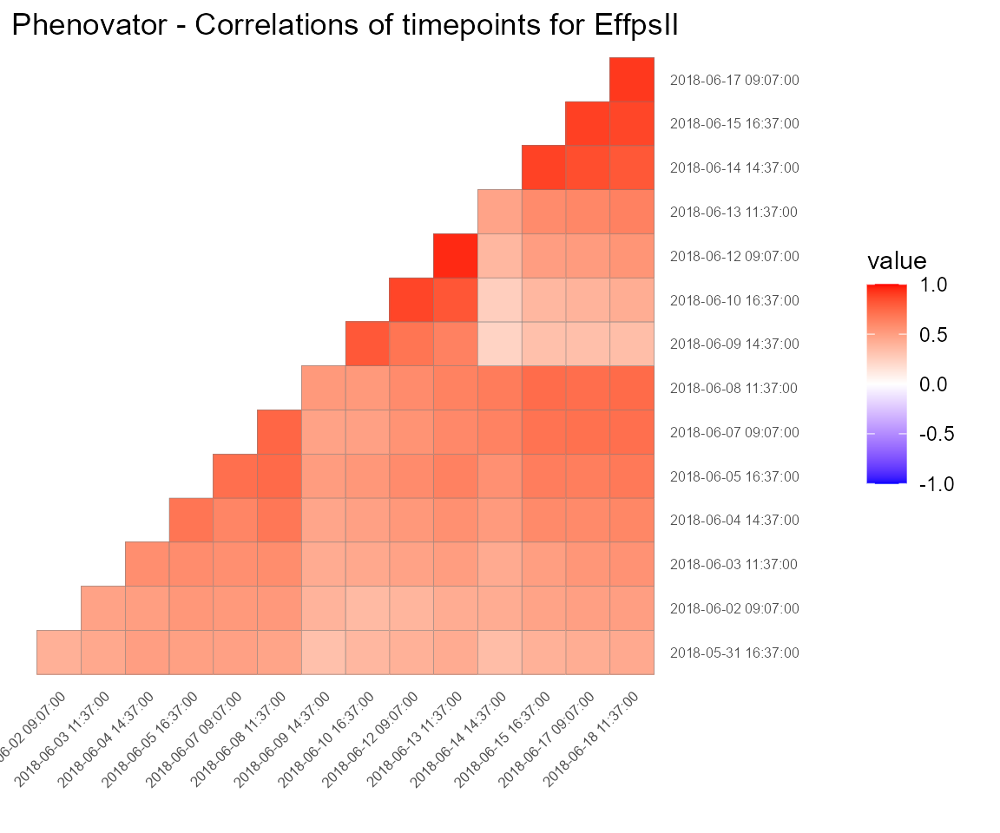
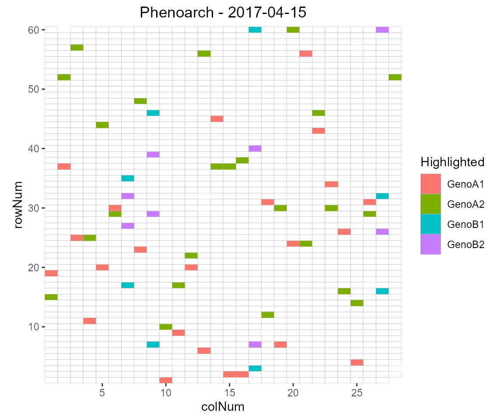
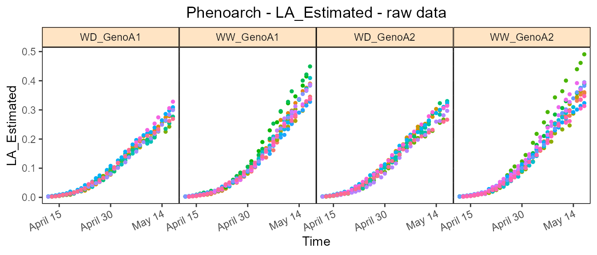

Intro_HTP.RmdThe statgenHTP package is developed as an easy-to-use package for analyzing data coming from high throughput phenotyping (HTP) platform experiments. The package provides many options for plotting and exporting the results of the analyses. It was developed within the EPPN2020project to meet the needs for automated analyses of HTP data.
New phenotyping techniques enable measuring traits at high throughput, with traits being measured at multiple time points for hundreds or thousands of plants. This requires automatic modeling of the data (Tardieu et al. 2017) with a model that is robust, flexible and has easy selection steps.
The aim of this package is to provide a suit of functions to (1) detect outliers at the time point or at the plant levels, (2) accurately separate the genetic effects from the spatial effects at each time point and (3) estimate relevant parameters from a modeled time course. It will provide user with either genotypic values or corrected values that can be used for further modeling, e.g. extract responses to environment (Eeuwijk et al. 2019).
Structure of the package
The overall structure of the package is in 5 main parts:
1. Data description and preparation - statgenHTP tutorial: 1. Introduction, data description and preparation 2. Outliers detection: time points - statgenHTP tutorial: 2. Outlier detection Time points
3. Correction for spatial trends - statgenHTP tutorial: 3. Correction for spatial trends
4. Outliers detection: time course - statgenHTP tutorial: 4. Outlier detection Time course
5. Parameter extraction - statgenHTP tutorial: 5. Parameters extraction
This documents describes in detail three datasets which are used to example the functions. It also contains description on how to prepare the data for analysis and how to visualize them.
For more information on how to install R and RStudio and the statgen packages, please read the Getting started file. Once everything is installed and before functions of the statgenHTP R package can be used within R, it needs to be made available:
### Load the statgenHTP package library(statgenHTP)
The first example used in this package contains data from an experiment in the Phenovator platform (WUR, Netherlands, (Flood et al. 2016)) with Arabidopsis plants. It consists of one experiment with 1440 plants grown in a growth chamber with different light intensity. The studied trait is the photosystem II efficiency (“EffpsII”) extracted from the pictures over time (Rooijen et al. 2017). The dataset called “PhenovatorDat1” is included in the package.
PFvator
The number of tested genotypes (Genotype) is 192 with 6-7 replicates per genotype (Replicate). Four reference genotypes were also tested with 15 or 30 replicates. The studied trait is the photosystem II efficiency (EffpsII) extracted from the pictures over time (Rooijen et al. 2017). The unique ID of the plant is recorded (plantId), together with the pot position in row (x) and in column (y). The dataset also includes factors from the design: the position of the camera (Image_pos) and the pots table (Basin).
data("PhenovatorDat1")
| Genotype | Basin | Image_pos | Replicate | x | y | Sowing_Position | timepoints | EffpsII | pos |
|---|---|---|---|---|---|---|---|---|---|
| G1 | 2 | 1b | 8 | 14 | 32 | 8R02 | 2018-05-31 16:37:00 | 0.685 | c14r32 |
| G1 | 2 | 1b | 8 | 14 | 32 | 8R02 | 2018-06-01 09:07:00 | 0.688 | c14r32 |
| G1 | 2 | 1b | 8 | 14 | 32 | 8R02 | 2018-06-01 11:37:00 | 0.652 | c14r32 |
| G1 | 2 | 1b | 8 | 14 | 32 | 8R02 | 2018-06-01 14:37:00 | 0.671 | c14r32 |
| G1 | 2 | 1b | 8 | 14 | 32 | 8R02 | 2018-06-01 16:37:00 | 0.616 | c14r32 |
| G1 | 2 | 1b | 8 | 14 | 32 | 8R02 | 2018-06-02 09:07:00 | 0.678 | c14r32 |
The second example used in this tutorial contains data from an experiment in the Phenoarch platform with maize plants (INRA, France, (Cabrera-Bosquet et al. 2016)). It consists of a greenhouse containing a conveyor belt structure of 28 lanes carrying 60 carts with one pot each (i.e. 1680 pots).
PFarch
In this dataset, there are two genotypic panels (population) and two water scenarios (Scenario), well-watered (WW) and water deficit (WD). The first panel contains 60 genotypes (geno) with 14 replicates: 7 in WW and 7 in WD. Note that there are more plants per replicate than one for the first panel (about 24 plants per genotype). The second population contains 30 genotypes with 8 replicates, 4 in WW and 4 in WD.
data("PhenoarchDat1")
The leaf area and the biomass of individual plants are estimated from images taken in 13 directions. Briefly, pixels extracted from RGB images are converted into biomass and leaf area using linear models derived from regression of data from multiple side view images and destructive measurements performed at different phenological stages, from 5 to 14 appeared leaves (i.e. from 15 to 50 days at 20°C after emergence). Time courses of biomass (Biomass_Estimated) and leaf area (LA_Estimated) are expressed as a function of thermal time (TT). The height of each plants (Height_Estimated) is also estimated from the pictures. The number of visible leaves (count_leaf) is counted at least once a week on each plant. To prevent errors in leaf counting, leaves 5 and 10 of each plant are marked soon after appearance. The phyllocron is calculated as the slope of the linear regression between the number of leaves and the thermal time at 2017-04-27 day, before the beginning of the water deficit.
The unique ID of the plant is recorded (plantId), together with the pot position in row (Row) and in column (Col).
| Date | pos | geno | Scenario | population | Row | Col | Biomass_Estimated |
|---|---|---|---|---|---|---|---|
| 2017-04-18 | c15r1 | GenoA50 | WW | Panel1 | 1 | 15 | 0.7984986 |
| 2017-04-20 | c15r1 | GenoA50 | WW | Panel1 | 1 | 15 | 4.6488698 |
| 2017-04-21 | c15r1 | GenoA50 | WW | Panel1 | 1 | 15 | 7.9376467 |
| 2017-04-22 | c15r1 | GenoA50 | WW | Panel1 | 1 | 15 | 14.4738251 |
| 2017-04-23 | c15r1 | GenoA50 | WW | Panel1 | 1 | 15 | 18.8695214 |
| 2017-04-24 | c15r1 | GenoA50 | WW | Panel1 | 1 | 15 | 26.4217446 |
| Date | pos | geno | Scenario | population | Row | Col | Biomass_Estimated |
|---|---|---|---|---|---|---|---|
| 2017-04-18 | c16r1 | GenoA15 | WD | Panel1 | 1 | 16 | NA |
| 2017-04-20 | c16r1 | GenoA15 | WD | Panel1 | 1 | 16 | 4.488591 |
| 2017-04-21 | c16r1 | GenoA15 | WD | Panel1 | 1 | 16 | 9.317522 |
| 2017-04-22 | c16r1 | GenoA15 | WD | Panel1 | 1 | 16 | 13.019643 |
| 2017-04-23 | c16r1 | GenoA15 | WD | Panel1 | 1 | 16 | 17.820404 |
| 2017-04-24 | c16r1 | GenoA15 | WD | Panel1 | 1 | 16 | 28.233439 |
The tip root data set was obtained during an experiment performed at the RootPhAir platform (Louvain-La-Neuve University). This platform consists in two aeroponic tanks of 495 plants located in the same greenhouse. Plants are hold on 5 plants strips with 99 strips per tank. Sprinklers are placed in the bottom of the tanks and spray nutrient solution. Strips move constantly and plants are pictured when the strip passes in front of the camera. Plants are pictured every two hours. Root system is described in two dimensions, with the root tip position in depth and width (tipPos_y and tipPos_x respectively) deduced from image analysis.
PFrooth
This data set consists of two experiments (Exp) of root growth. For each genotype (Genotype), the tip position (tipPos_x and tipPos_y) of the main root was tracked over time (Time) for each plant (plantId).
data("RootDat1")
| Exp | thermalTime | Genotype | plantId | Tank | Strip | Pos | tipPos_x | tipPos_y | Time |
|---|---|---|---|---|---|---|---|---|---|
| 1 | 116.0433 | 116 | A_01_2 | A | 1 | 2 | 1.4857143 | 3.042857 | 2016-11-07 13:15:41 |
| 1 | 124.3465 | 116 | A_01_2 | A | 1 | 2 | 0.0535714 | 2.385714 | 2016-11-08 00:26:39 |
| 1 | 126.3715 | 116 | A_01_2 | A | 1 | 2 | -0.0785714 | 2.014286 | 2016-11-08 02:41:01 |
| 1 | 128.2498 | 116 | A_01_2 | A | 1 | 2 | -0.2357143 | 2.042857 | 2016-11-08 04:55:31 |
| 1 | 137.7153 | 116 | A_01_2 | A | 1 | 2 | 1.4892857 | 3.042857 | 2016-11-08 18:20:01 |
| 1 | 141.3060 | 116 | A_01_2 | A | 1 | 2 | -0.1071429 | 2.314286 | 2016-11-08 22:48:26 |
TO NOTE: in this example, plants are constantly moving and it was not possible to get unique time point containing the full platform. As a consequence, it is not possible to perform a spatial analysis per time point, but the other functions for outliers detection and longitudinal modelling are available and illustrated in the following tutorials.
The first step when modeling platform experiment data with the statgenHTP package is creating an object of class TP (Time Points). In this object, the time points are split into single data frames. It is then used throughout the statgenHTP package as input for analyses.
TO NOTE: It is possible to use the functions of this package with a phenotype measured at one time point only. In that case, the user need to create a column with time point containing the unique measurement time.
TP objectA TP object can be created from a data.frame with the function createTimePoints. This function does a number of things:
TP object.timeFormat. For example, with a date/time input of the form “day/month/year hour:minute”, use %d/%m/%Y %H:%M. For a full list of abbreviations see the R package strptime. TO NOTE when the input time is just a numeric, the function will convert it to time from 01-01-1970 (origin time of the package lubridate).check and checkGenotypes when addCheck=TRUE.TP object is a list of data.frames where each data.frame contains the data for a single time point. If there is only one time points the output will be a list with only one item.data.frame with columns timeNumber and timePoint as attribute “timePoints” to the TP object. This data.frame can be used for referencing the time points by their number.It is possible to transform a TP object back into a data frame with the as.data.frame() function.
For the example first a TP object is created containing all the time points.
## Create a TP object containing the data from the Phenovator. phenoTP <- createTimePoints(dat = PhenovatorDat1, experimentName = "Phenovator", genotype = "Genotype", timePoint = "timepoints", repId = "Replicate", plotId = "pos", rowNum = "y", colNum = "x", addCheck = TRUE, checkGenotypes = c("check1", "check2", "check3", "check4")) #> Warning: The following plotIds have observations for less than 50% of the time points: #> c24r41, c7r18, c7r49 summary(phenoTP) #> phenoTP contains data for experiment Phenovator. #> #> It contains 73 time points. #> First time point: 2018-05-31 16:37:00 #> Last time point: 2018-06-18 16:37:00 #> #> The following genotypes are defined as check genotypes: check1, check2, check3, check4.
In this dataset, 3 plants contain less than 50% of the 73 time points. The user may choose to check the data for these plant and eventually to remove them from the dataset.
The function getTimePoints allows to generate a data frame containing the time points and their numbers in the TP object. Below is a example with the first 6 time points of the phenoTP:
### Extract the time points table timepoint <- getTimePoints(phenoTP)
| timeNumber | timePoint |
|---|---|
| 1 | 2018-05-31 16:37:00 |
| 2 | 2018-06-01 09:07:00 |
| 3 | 2018-06-01 11:37:00 |
| 4 | 2018-06-01 14:37:00 |
| 5 | 2018-06-01 16:37:00 |
| 6 | 2018-06-02 09:07:00 |
The TP object just created is a list with 73 items, one for each time point in the original data.frame (called “PhenovatorDat1”). The option experimentName is used for identifying the dataset and is a requirement. The column “Genotype” in the original data is renamed to “genotype” and converted to a factor. The columns “Replicate” and “pos” are renamed and converted likewise. The newly created column “plotID” needs to be a unique identifier for a plot or a plant. It cannot occur more than once per time point. The columns “y” and “x” are renamed to “rowNum” and “colNum” respectively. Simultaneously, two columns “rowId” and “colId” are created containing the same information converted to a factor. This seemingly duplicate information is needed for spatial analysis. The information about which columns have been renamed when creating a TP object is stored as an attribute of each individual data.frame in the object. The option addCheck is set as TRUE to specify that the genotypes listed in checkGenotypes are reference genotypes (or check). This option will create a column “check” with a value “noCheck” for the genotypes that are not in checkGenotypes and the name of the genotype for the checkGenotypes. Also a column “genoCheck” is added with the names of the genotypes that are not in checkGenotypes and NA for the checkGenotypes (see section 4.1). These columns are necessary for fitting models on data in case of augmented design (Piepho and Williams 2016).
TP objectSeveral plots can be made to further investigate the content of a TP object.
The first type of plot displays the layout of the experiment as a grid using the row and column coordinates in “plotID”. The default option creates plots of all time points in the TP object. This can be restricted to selected time points using their number in the option timePoints. If replicates (“repId”) are available, a black line is plotted between them. Missing plots are indicated in white circled with a bold black line.
## Plot the layout for the third time point. plot(phenoTP, plotType = "layout", timePoints = 3)

Here, the third time point is displayed which corresponds to the 1st of June at 11:37. Note that the title can be manually changed using the title option. This plot can be extended by highlighting interesting genotypes in the layout. Hereafter the check genotypes are highlighted:
## Plot the layout for the third time point with the check genotypes highlighted. plot(phenoTP, plotType = "layout", timePoints = 3, highlight = c("check1", "check2", "check3", "check4"))

It is possible to add the names of the genotypes to the layout.
## Plot the layout for the third time point. plot(phenoTP, plotType = "layout", timePoints = 3, highlight = c("check1", "check2", "check3", "check4"), showGeno = TRUE)

Raw data can be displayed per genotype. By default all genotypes are used but it can be restricted using genotypes and a subset of genotypes. By default, data are plotted as point but this can be changed by setting plotLine = TRUE.
## Create the raw data time courses for four genotypes. plot(phenoTP, traits = "EffpsII", plotType = "raw", genotypes = c("G1", "G2", "check1"))

Boxplots can be made to get an idea of the total variability of the trait in the TP object. By default a box is plotted per time point for the specified trait using all time points.
## Create a boxplot for "EffpsII" using the default all time points. plot(phenoTP, plotType = "box", traits = "EffpsII")

Colors can be applied to groups within time points using the option colorBy. The boxes for the (groups of) time points can be ordered using orderBy. Boxes can be ordered by alphabetical order (“alphabetic”) or by the group mean (“ascending”,“descending”).
## Create a boxplot for "EffpsII" with 5 time points and boxes colored by "repId" within ## time point. plot(phenoTP, plotType = "box", traits = "EffpsII", timePoints = 1:5, colorBy = "repId")

The time points in the boxplot can be grouped using the option groupBy.
## Create a boxplot for "EffpsII" with 5 time points and boxes grouped by "repId". plot(phenoTP, plotType = "box", traits = "EffpsII", timePoints = 1:5, groupBy = "repId")

The last plot that can be made is a plot of the correlations between the time points for a specified trait. The order of the plot is the time and by default all time points are used.
## Create a correlation plot for "EffpsII" for a selection of time points. plot(phenoTP, plotType = "cor", traits = "EffpsII", timePoints = seq(from = 1,to = 73,by = 5))

Each plot can be exported to a pdf document by using the outFile option containing the name of the document.
A second TP object is created containing all the time points:
phenoTParch <- createTimePoints(dat = PhenoarchDat1, experimentName = "Phenoarch", genotype = "geno", timePoint = "Time", plotId = "pos", rowNum = "Row", colNum = "Col") summary(phenoTParch) #> phenoTParch contains data for experiment Phenoarch. #> #> It contains 35 time points. #> First time point: 2017-04-13 #> Last time point: 2017-05-17 #> #> No check genotypes are defined.
The “phenoTParch” object just created is a list with 35 items, one for each time points in the original data.frame (called “PhenoarchDat1”). We can visualize the layout and the raw data the same way as for the Phenovator data.

Note that for the raw data, we can already use the geno.decomp option to split the genotypes using the water scenario:
plot(phenoTParch, traits = "LA_Estimated", plotType = "raw", genotypes = c("GenoA1", "GenoA2"), geno.decomp = c("Scenario"))

A third TP object is created containing all the time points:
rootTP <- createTimePoints(dat = RootDat1, experimentName = "UCL1", genotype = "Genotype", timePoint = "Time", plotId = "plantId", rowNum = "Strip", colNum = "Pos") summary(rootTP) #> rootTP contains data for experiment UCL1. #> #> It contains 16275 time points. #> First time point: 2016-11-06 12:58:47 #> Last time point: 2016-11-15 01:32:08 #> #> No check genotypes are defined.
This dataset is special, there is no common time point for all the platform, for example no date at which all plants were pictured. Instead, plants are constantly moving and pictures are taken every few minutes. Hence, each rows of the data frame has a unique time point. As a consequence, the “rootTP” object just created is a list with 16275 items, one for each time points in the original data.frame (called “RootDat1”).
rootRaw
Cabrera-Bosquet, Llorenç, Christian Fournier, Nicolas Brichet, Claude Welcker, Benoît Suard, and François Tardieu. 2016. “High-Throughput Estimation of Incident Light, Light Interception and Radiation-Use Efficiency of Thousands of Plants in a Phenotyping Platform.” New Phytologist 212 (1): 269–81. https://doi.org/10.1111/nph.14027.
Eeuwijk, Fred A. van, Daniela Bustos-Korts, Emilie J. Millet, Martin P. Boer, Willem Kruijer, Addie Thompson, Marcos Malosetti, et al. 2019. “Modelling Strategies for Assessing and Increasing the Effectiveness of New Phenotyping Techniques in Plant Breeding.” Plant Science 282 (May): 23–39. https://doi.org/10.1016/j.plantsci.2018.06.018.
Flood, Pádraic J., Willem Kruijer, Sabine K. Schnabel, Rob van der Schoor, Henk Jalink, Jan F. H. Snel, Jeremy Harbinson, and Mark G. M. Aarts. 2016. “Phenomics for Photosynthesis, Growth and Reflectance in Arabidopsis Thaliana Reveals Circadian and Long-Term Fluctuations in Heritability.” Plant Methods 12 (1): 14. https://doi.org/10.1186/s13007-016-0113-y.
Piepho, Hans-Peter, and Emlyn R. Williams. 2016. “Augmented Row–Column Designs for a Small Number of Checks.” Agronomy Journal 108 (6): 2256. https://doi.org/10.2134/agronj2016.06.0325.
Rooijen, Roxanne van, Willem Kruijer, René Boesten, Fred A. van Eeuwijk, Jeremy Harbinson, and Mark G. M. Aarts. 2017. “Natural Variation of YELLOW SEEDLING1 Affects Photosynthetic Acclimation of Arabidopsis Thaliana.” Nature Communications 8 (1). https://doi.org/10.1038/s41467-017-01576-3.
Tardieu, François, Llorenç Cabrera-Bosquet, Tony Pridmore, and Malcolm Bennett. 2017. “Plant Phenomics, from Sensors to Knowledge.” Current Biology 27 (15): R770–R783. https://doi.org/10.1016/j.cub.2017.05.055.